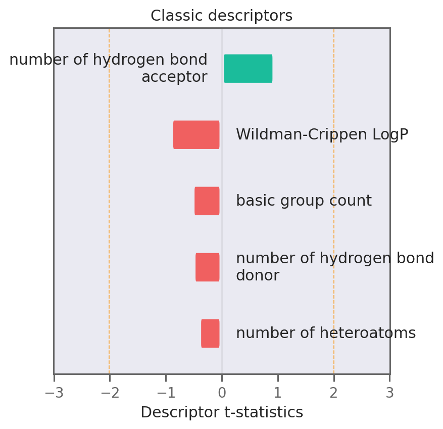
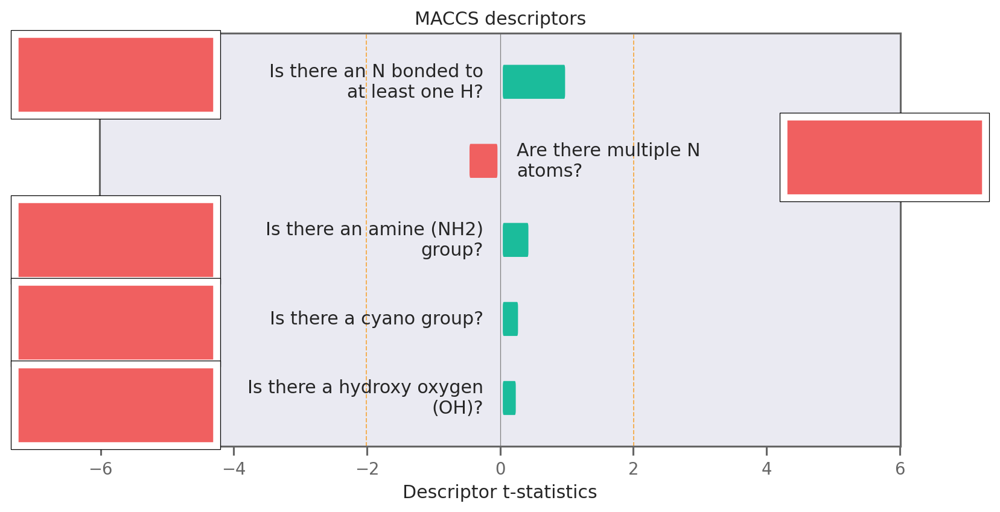
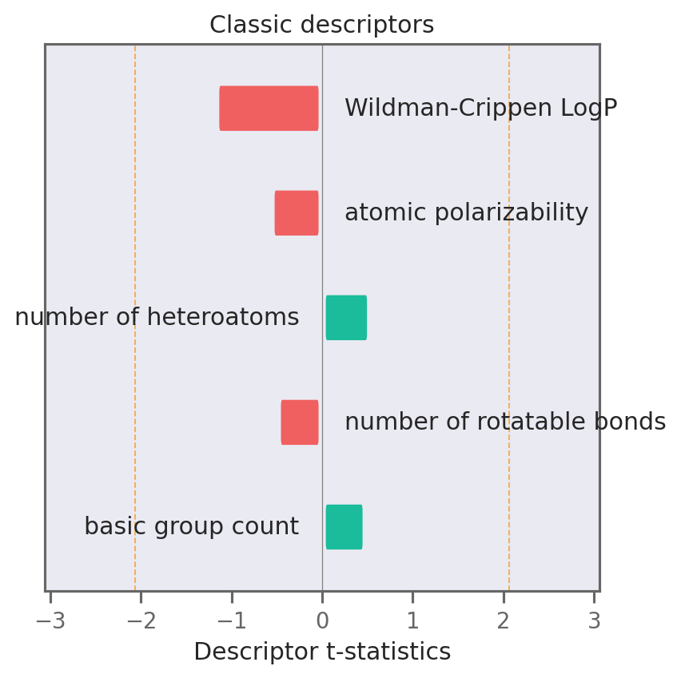
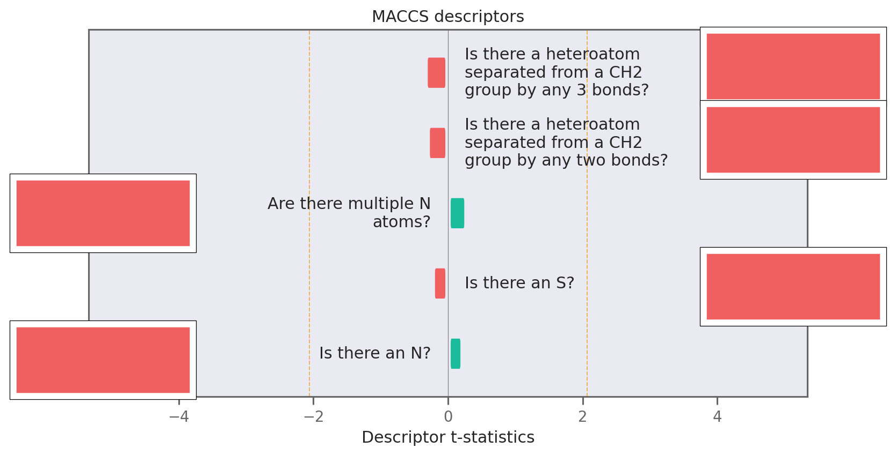
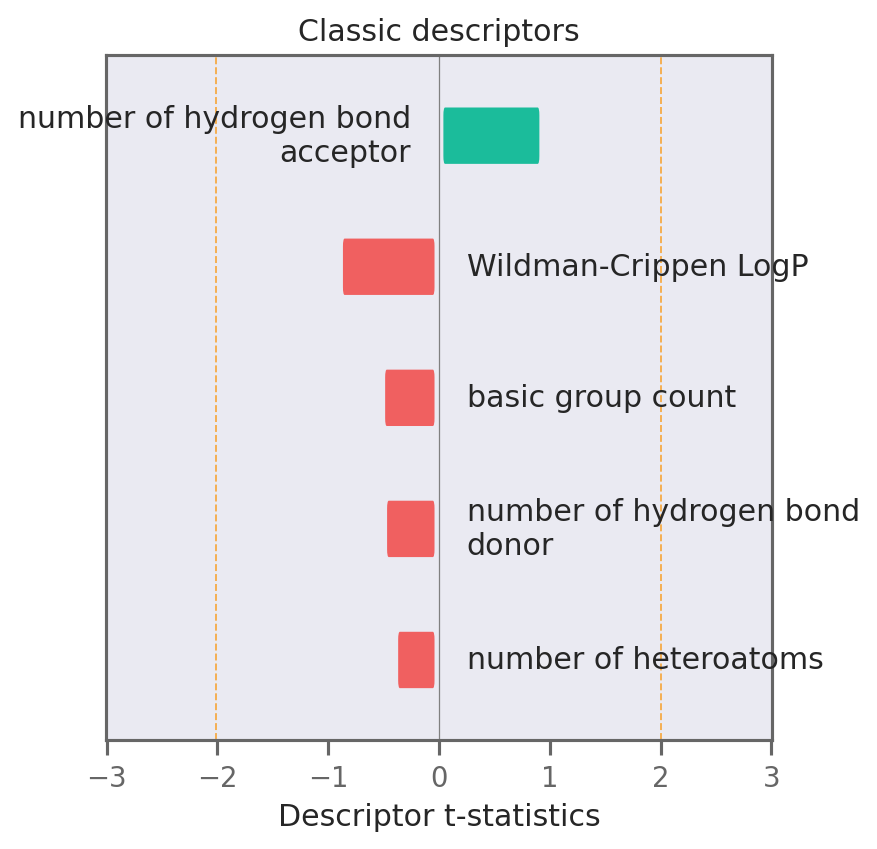
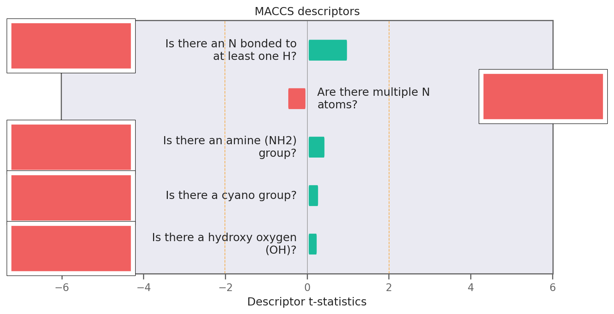
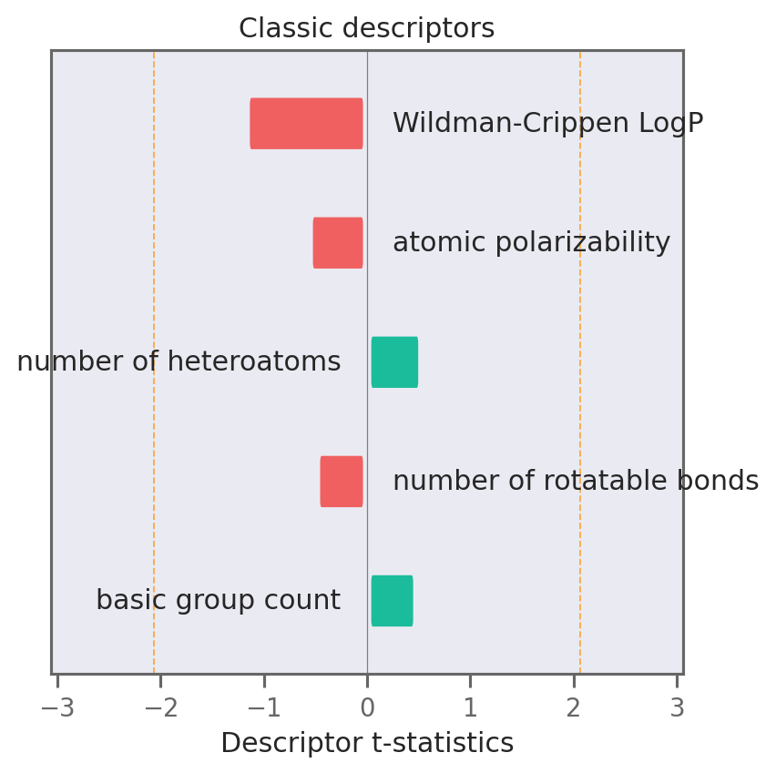
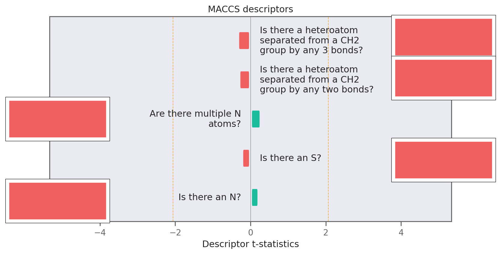

import os
os.environ["CUDA_VISIBLE_DEVICES"] = "0"
import pandas as pd
import matplotlib.pyplot as plt
from matplotlib.patches import Rectangle, FancyBboxPatch
from matplotlib.offsetbox import AnnotationBbox
import seaborn as sns
import textwrap
import skunk
import matplotlib as mpl
import numpy as np
import tensorflow as tf
import selfies as sf
import exmol
from dataclasses import dataclass
from rdkit.Chem.Draw import rdDepictor, MolsToGridImage
from rdkit.Chem import MolFromSmiles, MACCSkeys
rdDepictor.SetPreferCoordGen(True)
sns.set_context("notebook")
sns.set_style(
"dark",
{
"xtick.bottom": True,
"ytick.left": True,
"xtick.color": "#666666",
"ytick.color": "#666666",
"axes.edgecolor": "#666666",
"axes.linewidth": 0.8,
"figure.dpi": 300,
},
)
color_cycle = ["#F06060", "#1BBC9B", "#F06060", "#5C4B51", "#F3B562", "#6e5687"]
mpl.rcParams["axes.prop_cycle"] = mpl.cycler(color=color_cycle)
mpl.rcParams["font.size"] = 12
soldata = pd.read_csv(
"https://github.com/whitead/dmol-book/raw/master/data/curated-solubility-dataset.csv"
)
features_start_at = list(soldata.columns).index("MolWt")
np.random.seed(0)
2022-05-06 17:00:01.397501: W tensorflow/stream_executor/platform/default/dso_loader.cc:64] Could not load dynamic library 'libcudart.so.11.0'; dlerror: libcudart.so.11.0: cannot open shared object file: No such file or directory; LD_LIBRARY_PATH: /opt/hostedtoolcache/Python/3.8.12/x64/lib
2022-05-06 17:00:01.397538: I tensorflow/stream_executor/cuda/cudart_stub.cc:29] Ignore above cudart dlerror if you do not have a GPU set up on your machine.
# scramble them
soldata = soldata.sample(frac=0.01, random_state=0).reset_index(drop=True)
soldata.head()
| ID | Name | InChI | InChIKey | SMILES | Solubility | SD | Ocurrences | Group | MolWt | ... | NumRotatableBonds | NumValenceElectrons | NumAromaticRings | NumSaturatedRings | NumAliphaticRings | RingCount | TPSA | LabuteASA | BalabanJ | BertzCT | |
|---|---|---|---|---|---|---|---|---|---|---|---|---|---|---|---|---|---|---|---|---|---|
| 0 | B-4206 | diuron | InChI=1S/C9H10Cl2N2O/c1-13(2)9(14)12-6-3-4-7(1... | XMTQQYYKAHVGBJ-UHFFFAOYSA-N | CN(C)C(=O)Nc1ccc(Cl)c(Cl)c1 | -3.744300 | 1.227164 | 5 | G4 | 233.098 | ... | 1.0 | 76.0 | 1.0 | 0.0 | 0.0 | 1.0 | 32.34 | 92.603980 | 2.781208 | 352.665233 |
| 1 | F-988 | 7-(3-amino-3-methylazetidin-1-yl)-8-chloro-1-c... | InChI=1S/C17H17ClFN3O3/c1-17(20)6-21(7-17)14-1... | DUNZFXZSFJLIKR-UHFFFAOYSA-N | CC1(N)CN(C2=C(Cl)C3=C(C=C2F)C(=O)C(C(=O)O)=CN3... | -5.330000 | 0.000000 | 1 | G1 | 365.792 | ... | 3.0 | 132.0 | 2.0 | 2.0 | 2.0 | 4.0 | 88.56 | 147.136366 | 2.001398 | 973.487509 |
| 2 | C-1996 | 4-acetoxybiphenyl; 4-biphenylyl acetate | InChI=1S/C14H12O2/c1-11(15)16-14-9-7-13(8-10-1... | MISFQCBPASYYGV-UHFFFAOYSA-N | CC(=O)OC1=CC=C(C=C1)C2=CC=CC=C2 | -4.400000 | 0.000000 | 1 | G1 | 212.248 | ... | 2.0 | 80.0 | 2.0 | 0.0 | 0.0 | 2.0 | 26.30 | 94.493449 | 2.228677 | 471.848345 |
| 3 | A-3055 | methane dimolybdenum | InChI=1S/CH4.2Mo/h1H4;; | JAGQSESDQXCFCH-UHFFFAOYSA-N | C.[Mo].[Mo] | -3.420275 | 0.409223 | 2 | G3 | 207.923 | ... | 0.0 | 20.0 | 0.0 | 0.0 | 0.0 | 0.0 | 0.00 | 49.515427 | -0.000000 | 2.754888 |
| 4 | A-2575 | ethyl 4-[[(methylphenylamino)methylene]amino]b... | InChI=1S/C17H18N2O2/c1-3-21-17(20)14-9-11-15(1... | GNGYPJUKIKDJQT-UHFFFAOYSA-N | CCOC(=O)c1ccc(cc1)N=CN(C)c2ccccc2 | -5.450777 | 0.000000 | 1 | G1 | 282.343 | ... | 5.0 | 108.0 | 2.0 | 0.0 | 0.0 | 2.0 | 41.90 | 124.243431 | 2.028889 | 606.447052 |
5 rows × 26 columns
selfies_list = []
for s in soldata.SMILES:
try:
selfies_list.append(sf.encoder(exmol.sanitize_smiles(s)[1]))
except sf.EncoderError:
selfies_list.append(None)
len(selfies_list)
100
basic = set(exmol.get_basic_alphabet())
data_vocab = set(
sf.get_alphabet_from_selfies([s for s in selfies_list if s is not None])
)
vocab = ['[nop]']
vocab.extend(list(data_vocab.union(basic)))
vocab_stoi = {o: i for o, i in zip(vocab, range(len(vocab)))}
def selfies2ints(s):
result = []
for token in sf.split_selfies(s):
if token == '.':
continue # ?
if token in vocab_stoi:
result.append(vocab_stoi[token])
else:
result.append(np.nan)
# print('Warning')
return result
def ints2selfies(v):
return "".join([vocab[i] for i in v])
# test them out
s = selfies_list[0]
print('selfies:', s)
v = selfies2ints(s)
print('selfies2ints:', v)
so = ints2selfies(v)
print('ints2selfes:', so)
assert so == s.replace(
'.', ''
) # make sure '.' is removed from Selfies string during assertion
selfies: [C][N][Branch1][C][C][C][=Branch1][C][=O][N][C][=C][C][=C][Branch1][C][Cl][C][Branch1][C][Cl][=C][Ring1][Branch2]
selfies2ints: [1, 35, 10, 1, 1, 1, 40, 1, 33, 35, 1, 6, 1, 6, 10, 1, 44, 1, 10, 1, 44, 6, 23, 8]
ints2selfes: [C][N][Branch1][C][C][C][=Branch1][C][=O][N][C][=C][C][=C][Branch1][C][Cl][C][Branch1][C][Cl][=C][Ring1][Branch2]
# creating an object
@dataclass
class Config:
vocab_size: int
example_number: int
batch_size: int
buffer_size: int
embedding_dim: int
rnn_units: int
hidden_dim: int
config = Config(
vocab_size=len(vocab),
example_number=len(selfies_list),
batch_size=16,
buffer_size=10000,
embedding_dim=256,
hidden_dim=128,
rnn_units=128,
)
# now get sequences
encoded = [selfies2ints(s) for s in selfies_list if s is not None]
padded_seqs = tf.keras.preprocessing.sequence.pad_sequences(encoded, padding="post")
# Now build dataset
data = tf.data.Dataset.from_tensor_slices(
(padded_seqs, soldata.Solubility.iloc[[bool(s) for s in selfies_list]].values)
)
# now split into val, test, train and batch
N = len(data)
split = int(0.1 * N)
test_data = data.take(split).batch(config.batch_size)
nontest = data.skip(split)
val_data, train_data = nontest.take(split).batch(config.batch_size), nontest.skip(
split
).shuffle(config.buffer_size).batch(config.batch_size).prefetch(
tf.data.experimental.AUTOTUNE
)
2022-05-06 17:00:03.438305: W tensorflow/stream_executor/platform/default/dso_loader.cc:64] Could not load dynamic library 'libcuda.so.1'; dlerror: libcuda.so.1: cannot open shared object file: No such file or directory; LD_LIBRARY_PATH: /opt/hostedtoolcache/Python/3.8.12/x64/lib
2022-05-06 17:00:03.438339: W tensorflow/stream_executor/cuda/cuda_driver.cc:269] failed call to cuInit: UNKNOWN ERROR (303)
2022-05-06 17:00:03.438360: I tensorflow/stream_executor/cuda/cuda_diagnostics.cc:156] kernel driver does not appear to be running on this host (fv-az246-872): /proc/driver/nvidia/version does not exist
2022-05-06 17:00:03.438678: I tensorflow/core/platform/cpu_feature_guard.cc:151] This TensorFlow binary is optimized with oneAPI Deep Neural Network Library (oneDNN) to use the following CPU instructions in performance-critical operations: AVX2 AVX512F FMA
To enable them in other operations, rebuild TensorFlow with the appropriate compiler flags.
model = tf.keras.Sequential()
# make embedding and indicate that 0 should be treated as padding mask
model.add(
tf.keras.layers.Embedding(
input_dim=config.vocab_size, output_dim=config.embedding_dim, mask_zero=True
)
)
# RNN layer
model.add(tf.keras.layers.GRU(config.rnn_units))
# a dense hidden layer
model.add(tf.keras.layers.Dense(config.hidden_dim, activation="relu"))
# regression, so no activation
model.add(tf.keras.layers.Dense(1))
model.summary()
Model: "sequential"
_________________________________________________________________
Layer (type) Output Shape Param #
=================================================================
embedding (Embedding) (None, None, 256) 12288
gru (GRU) (None, 128) 148224
dense (Dense) (None, 128) 16512
dense_1 (Dense) (None, 1) 129
=================================================================
Total params: 177,153
Trainable params: 177,153
Non-trainable params: 0
_________________________________________________________________
model.compile(tf.optimizers.Adam(1e-4), loss="mean_squared_error")
result = model.fit(train_data, validation_data=val_data, epochs=100, verbose=2)
Epoch 1/100
5/5 - 5s - loss: 13.2098 - val_loss: 8.2211 - 5s/epoch - 1s/step
Epoch 2/100
5/5 - 0s - loss: 13.0565 - val_loss: 8.0675 - 487ms/epoch - 97ms/step
Epoch 3/100
5/5 - 0s - loss: 12.8925 - val_loss: 7.9057 - 481ms/epoch - 96ms/step
Epoch 4/100
5/5 - 0s - loss: 12.7285 - val_loss: 7.7249 - 484ms/epoch - 97ms/step
Epoch 5/100
5/5 - 0s - loss: 12.5467 - val_loss: 7.5218 - 486ms/epoch - 97ms/step
Epoch 6/100
5/5 - 0s - loss: 12.3271 - val_loss: 7.2976 - 478ms/epoch - 96ms/step
Epoch 7/100
5/5 - 0s - loss: 12.0958 - val_loss: 7.0301 - 485ms/epoch - 97ms/step
Epoch 8/100
5/5 - 0s - loss: 11.8040 - val_loss: 6.7129 - 483ms/epoch - 97ms/step
Epoch 9/100
5/5 - 0s - loss: 11.4790 - val_loss: 6.3319 - 483ms/epoch - 97ms/step
Epoch 10/100
5/5 - 0s - loss: 11.0510 - val_loss: 5.8821 - 484ms/epoch - 97ms/step
Epoch 11/100
5/5 - 0s - loss: 10.5764 - val_loss: 5.3295 - 482ms/epoch - 96ms/step
Epoch 12/100
5/5 - 0s - loss: 9.9447 - val_loss: 4.6811 - 478ms/epoch - 96ms/step
Epoch 13/100
5/5 - 0s - loss: 9.2111 - val_loss: 3.8961 - 484ms/epoch - 97ms/step
Epoch 14/100
5/5 - 0s - loss: 8.2908 - val_loss: 2.9771 - 483ms/epoch - 97ms/step
Epoch 15/100
5/5 - 0s - loss: 7.0870 - val_loss: 1.9757 - 483ms/epoch - 97ms/step
Epoch 16/100
5/5 - 0s - loss: 5.9143 - val_loss: 1.0265 - 485ms/epoch - 97ms/step
Epoch 17/100
5/5 - 0s - loss: 4.5983 - val_loss: 0.7455 - 489ms/epoch - 98ms/step
Epoch 18/100
5/5 - 0s - loss: 4.1815 - val_loss: 1.8297 - 490ms/epoch - 98ms/step
Epoch 19/100
5/5 - 0s - loss: 4.5095 - val_loss: 1.6505 - 477ms/epoch - 95ms/step
Epoch 20/100
5/5 - 0s - loss: 4.0379 - val_loss: 0.8790 - 483ms/epoch - 97ms/step
Epoch 21/100
5/5 - 0s - loss: 3.9985 - val_loss: 0.6667 - 488ms/epoch - 98ms/step
Epoch 22/100
5/5 - 0s - loss: 4.0148 - val_loss: 0.6544 - 479ms/epoch - 96ms/step
Epoch 23/100
5/5 - 0s - loss: 3.9127 - val_loss: 0.7177 - 496ms/epoch - 99ms/step
Epoch 24/100
5/5 - 0s - loss: 3.7872 - val_loss: 0.8853 - 483ms/epoch - 97ms/step
Epoch 25/100
5/5 - 0s - loss: 3.6977 - val_loss: 0.9517 - 477ms/epoch - 95ms/step
Epoch 26/100
5/5 - 0s - loss: 3.6386 - val_loss: 0.9074 - 480ms/epoch - 96ms/step
Epoch 27/100
5/5 - 0s - loss: 3.5759 - val_loss: 0.7591 - 482ms/epoch - 96ms/step
Epoch 28/100
5/5 - 0s - loss: 3.4857 - val_loss: 0.7214 - 476ms/epoch - 95ms/step
Epoch 29/100
5/5 - 0s - loss: 3.4119 - val_loss: 0.7118 - 477ms/epoch - 95ms/step
Epoch 30/100
5/5 - 0s - loss: 3.3496 - val_loss: 0.7130 - 479ms/epoch - 96ms/step
Epoch 31/100
5/5 - 0s - loss: 3.2827 - val_loss: 0.7171 - 488ms/epoch - 98ms/step
Epoch 32/100
5/5 - 0s - loss: 3.2556 - val_loss: 0.7177 - 483ms/epoch - 97ms/step
Epoch 33/100
5/5 - 0s - loss: 3.1599 - val_loss: 0.5994 - 478ms/epoch - 96ms/step
Epoch 34/100
5/5 - 0s - loss: 3.1332 - val_loss: 0.5356 - 490ms/epoch - 98ms/step
Epoch 35/100
5/5 - 0s - loss: 3.0586 - val_loss: 0.6509 - 478ms/epoch - 96ms/step
Epoch 36/100
5/5 - 0s - loss: 2.9864 - val_loss: 0.7320 - 482ms/epoch - 96ms/step
Epoch 37/100
5/5 - 0s - loss: 2.9375 - val_loss: 0.6366 - 481ms/epoch - 96ms/step
Epoch 38/100
5/5 - 0s - loss: 2.8773 - val_loss: 0.5171 - 480ms/epoch - 96ms/step
Epoch 39/100
5/5 - 0s - loss: 2.8606 - val_loss: 0.4649 - 487ms/epoch - 97ms/step
Epoch 40/100
5/5 - 0s - loss: 2.7662 - val_loss: 0.5810 - 483ms/epoch - 97ms/step
Epoch 41/100
5/5 - 0s - loss: 2.7338 - val_loss: 0.5669 - 477ms/epoch - 95ms/step
Epoch 42/100
5/5 - 0s - loss: 2.6939 - val_loss: 0.5798 - 477ms/epoch - 95ms/step
Epoch 43/100
5/5 - 0s - loss: 2.6530 - val_loss: 0.5238 - 480ms/epoch - 96ms/step
Epoch 44/100
5/5 - 0s - loss: 2.7630 - val_loss: 0.4074 - 479ms/epoch - 96ms/step
Epoch 45/100
5/5 - 0s - loss: 2.6472 - val_loss: 0.5165 - 482ms/epoch - 96ms/step
Epoch 46/100
5/5 - 0s - loss: 2.4780 - val_loss: 0.6182 - 483ms/epoch - 97ms/step
Epoch 47/100
5/5 - 0s - loss: 2.5456 - val_loss: 0.5668 - 477ms/epoch - 95ms/step
Epoch 48/100
5/5 - 0s - loss: 2.3915 - val_loss: 0.4354 - 481ms/epoch - 96ms/step
Epoch 49/100
5/5 - 0s - loss: 2.4704 - val_loss: 0.4261 - 492ms/epoch - 98ms/step
Epoch 50/100
5/5 - 0s - loss: 2.4991 - val_loss: 0.6540 - 488ms/epoch - 98ms/step
Epoch 51/100
5/5 - 0s - loss: 2.3317 - val_loss: 0.4879 - 482ms/epoch - 96ms/step
Epoch 52/100
5/5 - 0s - loss: 2.3138 - val_loss: 0.4473 - 493ms/epoch - 99ms/step
Epoch 53/100
5/5 - 0s - loss: 2.2643 - val_loss: 0.5669 - 489ms/epoch - 98ms/step
Epoch 54/100
5/5 - 1s - loss: 2.2562 - val_loss: 0.6612 - 521ms/epoch - 104ms/step
Epoch 55/100
5/5 - 0s - loss: 2.2049 - val_loss: 0.4849 - 490ms/epoch - 98ms/step
Epoch 56/100
5/5 - 0s - loss: 2.1801 - val_loss: 0.5429 - 487ms/epoch - 97ms/step
Epoch 57/100
5/5 - 0s - loss: 2.1244 - val_loss: 0.5777 - 484ms/epoch - 97ms/step
Epoch 58/100
5/5 - 0s - loss: 2.1100 - val_loss: 0.4924 - 486ms/epoch - 97ms/step
Epoch 59/100
5/5 - 0s - loss: 2.1198 - val_loss: 0.5717 - 485ms/epoch - 97ms/step
Epoch 60/100
5/5 - 0s - loss: 2.0285 - val_loss: 0.5658 - 480ms/epoch - 96ms/step
Epoch 61/100
5/5 - 0s - loss: 2.0061 - val_loss: 0.5719 - 483ms/epoch - 97ms/step
Epoch 62/100
5/5 - 0s - loss: 1.9790 - val_loss: 0.5784 - 489ms/epoch - 98ms/step
Epoch 63/100
5/5 - 0s - loss: 1.9592 - val_loss: 0.5715 - 482ms/epoch - 96ms/step
Epoch 64/100
5/5 - 0s - loss: 1.9526 - val_loss: 0.5722 - 484ms/epoch - 97ms/step
Epoch 65/100
5/5 - 0s - loss: 1.9381 - val_loss: 0.6220 - 490ms/epoch - 98ms/step
Epoch 66/100
5/5 - 0s - loss: 1.9176 - val_loss: 0.6353 - 486ms/epoch - 97ms/step
Epoch 67/100
5/5 - 0s - loss: 1.9022 - val_loss: 0.5924 - 478ms/epoch - 96ms/step
Epoch 68/100
5/5 - 0s - loss: 1.9073 - val_loss: 0.5601 - 478ms/epoch - 96ms/step
Epoch 69/100
5/5 - 0s - loss: 1.8745 - val_loss: 0.6149 - 485ms/epoch - 97ms/step
Epoch 70/100
5/5 - 0s - loss: 1.8572 - val_loss: 0.7238 - 490ms/epoch - 98ms/step
Epoch 71/100
5/5 - 0s - loss: 1.8872 - val_loss: 0.5956 - 478ms/epoch - 96ms/step
Epoch 72/100
5/5 - 0s - loss: 1.8299 - val_loss: 0.6217 - 477ms/epoch - 95ms/step
Epoch 73/100
5/5 - 0s - loss: 1.8166 - val_loss: 0.6352 - 489ms/epoch - 98ms/step
Epoch 74/100
5/5 - 0s - loss: 1.8330 - val_loss: 0.6882 - 496ms/epoch - 99ms/step
Epoch 75/100
5/5 - 0s - loss: 1.7899 - val_loss: 0.6032 - 479ms/epoch - 96ms/step
Epoch 76/100
5/5 - 0s - loss: 1.7872 - val_loss: 0.6475 - 482ms/epoch - 96ms/step
Epoch 77/100
5/5 - 0s - loss: 1.7503 - val_loss: 0.7018 - 480ms/epoch - 96ms/step
Epoch 78/100
5/5 - 0s - loss: 1.7698 - val_loss: 0.6624 - 483ms/epoch - 97ms/step
Epoch 79/100
5/5 - 0s - loss: 1.8076 - val_loss: 0.7649 - 480ms/epoch - 96ms/step
Epoch 80/100
5/5 - 0s - loss: 1.7639 - val_loss: 0.6089 - 474ms/epoch - 95ms/step
Epoch 81/100
5/5 - 0s - loss: 1.7909 - val_loss: 0.6327 - 482ms/epoch - 96ms/step
Epoch 82/100
5/5 - 0s - loss: 1.7904 - val_loss: 0.8306 - 475ms/epoch - 95ms/step
Epoch 83/100
5/5 - 0s - loss: 1.7985 - val_loss: 0.6605 - 475ms/epoch - 95ms/step
Epoch 84/100
5/5 - 0s - loss: 1.7033 - val_loss: 0.6230 - 475ms/epoch - 95ms/step
Epoch 85/100
5/5 - 0s - loss: 1.7948 - val_loss: 0.6498 - 480ms/epoch - 96ms/step
Epoch 86/100
5/5 - 0s - loss: 1.6381 - val_loss: 0.7484 - 478ms/epoch - 96ms/step
Epoch 87/100
5/5 - 0s - loss: 1.7406 - val_loss: 0.7164 - 480ms/epoch - 96ms/step
Epoch 88/100
5/5 - 0s - loss: 1.6491 - val_loss: 0.6515 - 483ms/epoch - 97ms/step
Epoch 89/100
5/5 - 0s - loss: 1.6626 - val_loss: 0.6713 - 486ms/epoch - 97ms/step
Epoch 90/100
5/5 - 0s - loss: 1.6409 - val_loss: 0.7454 - 479ms/epoch - 96ms/step
Epoch 91/100
5/5 - 0s - loss: 1.6851 - val_loss: 0.8007 - 479ms/epoch - 96ms/step
Epoch 92/100
5/5 - 0s - loss: 1.6962 - val_loss: 0.6650 - 488ms/epoch - 98ms/step
Epoch 93/100
5/5 - 0s - loss: 1.6635 - val_loss: 0.7609 - 485ms/epoch - 97ms/step
Epoch 94/100
5/5 - 0s - loss: 1.6288 - val_loss: 0.8173 - 497ms/epoch - 99ms/step
Epoch 95/100
5/5 - 0s - loss: 1.5921 - val_loss: 0.6954 - 483ms/epoch - 97ms/step
Epoch 96/100
5/5 - 0s - loss: 1.6203 - val_loss: 0.7247 - 481ms/epoch - 96ms/step
Epoch 97/100
5/5 - 0s - loss: 1.5698 - val_loss: 0.7881 - 489ms/epoch - 98ms/step
Epoch 98/100
5/5 - 0s - loss: 1.5714 - val_loss: 0.7606 - 491ms/epoch - 98ms/step
Epoch 99/100
5/5 - 0s - loss: 1.5514 - val_loss: 0.7348 - 497ms/epoch - 99ms/step
Epoch 100/100
5/5 - 0s - loss: 1.5523 - val_loss: 0.7371 - 497ms/epoch - 99ms/step
model.save("solubility-rnn-accurate")
# model = tf.keras.models.load_model('solubility-rnn-accurate/')
2022-05-06 17:01:01.158197: W tensorflow/python/util/util.cc:368] Sets are not currently considered sequences, but this may change in the future, so consider avoiding using them.
WARNING:absl:Found untraced functions such as gru_cell_layer_call_fn, gru_cell_layer_call_and_return_conditional_losses while saving (showing 2 of 2). These functions will not be directly callable after loading.
INFO:tensorflow:Assets written to: solubility-rnn-accurate/assets
INFO:tensorflow:Assets written to: solubility-rnn-accurate/assets
WARNING:absl:<keras.layers.recurrent.GRUCell object at 0x7fddee6c70d0> has the same name 'GRUCell' as a built-in Keras object. Consider renaming <class 'keras.layers.recurrent.GRUCell'> to avoid naming conflicts when loading with `tf.keras.models.load_model`. If renaming is not possible, pass the object in the `custom_objects` parameter of the load function.
plt.figure(figsize=(5, 3.5))
plt.plot(result.history["loss"], label="training")
plt.plot(result.history["val_loss"], label="validation")
plt.legend()
plt.xlabel("Epoch")
plt.ylabel("Loss")
plt.savefig("rnn-loss.png", bbox_inches="tight", dpi=300)
plt.show()
yhat = []
test_y = []
for x, y in test_data:
yhat.extend(model(x).numpy().flatten())
test_y.extend(y.numpy().flatten())
yhat = np.array(yhat)
test_y = np.array(test_y)
# plot test data
plt.figure(figsize=(5, 3.5))
plt.plot(test_y, test_y, ":")
plt.plot(test_y, yhat, ".")
plt.text(
max(test_y) - 6,
min(test_y) + 1,
f"correlation = {np.corrcoef(test_y, yhat)[0,1]:.3f}",
)
plt.text(
max(test_y) - 6, min(test_y), f"loss = {np.sqrt(np.mean((test_y - yhat)**2)):.3f}"
)
plt.xlabel(r"$y$")
plt.ylabel(r"$\hat{y}$")
plt.title("Testing Data")
plt.savefig("rnn-fit.png", dpi=300, bbox_inches="tight")
plt.show()

LIME explanations
In the following example, we find out what descriptors influence solubility of a molecules. For example, let’s say we have a molecule with LogS=1.5. We create a perturbed chemical space around that molecule using stoned method and then use lime to find out which descriptors affect solubility predictions for that molecule.
Define functions used for this method
# Predictor function is used as input to sample_space function
def predictor_function(smile_list, selfies):
encoded = [selfies2ints(s) for s in selfies]
# check for nans
valid = [1.0 if sum(e) > 0 else np.nan for e in encoded]
encoded = [np.nan_to_num(e, nan=0) for e in encoded]
padded_seqs = tf.keras.preprocessing.sequence.pad_sequences(encoded, padding="post")
labels = np.reshape(model.predict(padded_seqs), (-1))
return labels * valid
# Gives indices for descriptor names
def feature_dict(space):
features = {
a: b
for a, b in zip(
space[0].descriptors.descriptor_names,
np.arange(len(space[0].descriptors.descriptors)),
)
}
return features
Plot WLS Fit and show which descriptors matter for an instance
# Make sure SMILES doesn't contain multiple fragments
for i in soldata.SMILES:
if "." in i:
continue
smi = i
break
MolFromSmiles(smi)
stoned_kwargs = {
"num_samples": 2500,
"alphabet": exmol.get_basic_alphabet(),
"max_mutations": 1,
}
space = exmol.sample_space(smi, predictor_function, stoned_kwargs=stoned_kwargs)
0%| | 0/2500 [00:00<?, ?it/s]
🥌STONED🥌 Mutations: 1: 0%| | 0/2500 [00:00<?, ?it/s]
🥌STONED🥌 Mutations: 1: 100%|██████████| 2500/2500 [00:02<00:00, 1209.64it/s]
🥌STONED🥌 Done: 100%|██████████| 2500/2500 [00:02<00:00, 1209.64it/s]
😀Calling your model function😀: 100%|██████████| 2500/2500 [00:02<00:00, 1209.64it/s]
😀Calling your model function😀: 0%| | 0/1408 [00:00<?, ?it/s]
🔭Projecting...🔭: 0%| | 0/1408 [00:00<?, ?it/s]
🔭Projecting...🔭: 87%|████████▋ | 1221.5/1408 [00:00<00:00, 12214.40it/s]
🥰Finishing up🥰: 100%|██████████| 1408.0/1408 [00:01<00:00, 12214.40it/s]
🤘Done🤘: 100%|██████████| 1408.0/1408 [00:02<00:00, 12214.40it/s]
🤘Done🤘: 100%|██████████| 1408.0/1408 [00:02<00:00, 677.02it/s]
import scipy.stats as ss
%matplotlib inline
desc_type = ["Classic", "ECFP", "MACCS"]
for d in desc_type:
beta = exmol.lime_explain(space, descriptor_type=d)
exmol.plot_descriptors(space, d)
plt.show()
SMARTS annotations for MACCS descriptors were created using SMARTSviewer (smartsview.zbh.uni-hamburg.de, Copyright: ZBH, Center for Bioinformatics Hamburg) developed by K. Schomburg et. al. (J. Chem. Inf. Model. 2010, 50, 9, 1529–1535)
fkw = {"figsize": (6, 4)}
font = {"family": "normal", "weight": "normal", "size": 16}
fig = plt.figure(figsize=(10, 5))
mpl.rc("axes", titlesize=12)
mpl.rc("font", size=16)
ax_dict = fig.subplot_mosaic("AABBB")
# Plot space by fit
svg = exmol.plot_utils.plot_space_by_fit(
space,
[space[0]],
figure_kwargs=fkw,
mol_size=(200, 200),
offset=1,
ax=ax_dict["B"],
beta=beta,
)
# Compute y_wls
w = np.array([1 / (1 + (1 / (e.similarity + 0.000001) - 1) ** 5) for e in space])
non_zero = w > 10 ** (-6)
w = w[non_zero]
N = w.shape[0]
ys = np.array([e.yhat for e in space])[non_zero].reshape(N).astype(float)
x_mat = np.array([list(e.descriptors.descriptors) for e in space])[non_zero].reshape(
N, -1
)
y_wls = x_mat @ beta
y_wls += np.mean(ys)
lower = np.min(ys)
higher = np.max(ys)
# set transparency using w
normalizer = plt.Normalize(min(w), max(w))
cmap = plt.cm.Oranges(w)
cmap[:, -1] = w
def weighted_mean(x, w):
return np.sum(x * w) / np.sum(w)
def weighted_cov(x, y, w):
return np.sum(w * (x - weighted_mean(x, w)) * (y - weighted_mean(y, w))) / np.sum(w)
def weighted_correlation(x, y, w):
return weighted_cov(x, y, w) / np.sqrt(
weighted_cov(x, x, w) * weighted_cov(y, y, w)
)
corr = weighted_correlation(ys, y_wls, w)
ax_dict["A"].plot(
np.linspace(lower, higher, 100), np.linspace(lower, higher, 100), "--", linewidth=2
)
sc = ax_dict["A"].scatter(ys, y_wls, s=50, marker=".", c=cmap, cmap=cmap)
ax_dict["A"].text(max(ys) - 3, min(ys) + 1, f"weighted \ncorrelation = {corr:.3f}")
ax_dict["A"].set_xlabel(r"$\hat{y}$")
ax_dict["A"].set_ylabel(r"$g$")
ax_dict["A"].set_title("Weighted Least Squares Fit")
ax_dict["A"].set_xlim(lower, higher)
ax_dict["A"].set_ylim(lower, higher)
ax_dict["A"].set_aspect(1.0 / ax_dict["A"].get_data_ratio(), adjustable="box")
cbar = plt.colorbar(sc, orientation="horizontal", pad=0.15, ax=ax_dict["A"])
cbar.set_label("Chemical similarity")
plt.tight_layout()
plt.savefig("weighted_fit.svg", dpi=300, bbox_inches="tight", transparent=False)
plt.cm.Oranges

Robustness to incomplete sampling
We first sample a reference chemical space, and then subsample smaller chemical spaces from this reference. Rank correlation is computed between important descriptors for the smaller subspaces and the reference space.
Get descriptor attributions for the reference space
# Sample a big space
stoned_kwargs = {
"num_samples": 5000,
"alphabet": exmol.get_basic_alphabet(),
"max_mutations": 2,
}
space = exmol.sample_space(smi, predictor_function, stoned_kwargs=stoned_kwargs)
len(space)
0%| | 0/5000 [00:00<?, ?it/s]
🥌STONED🥌 Mutations: 1: 0%| | 0/5000 [00:00<?, ?it/s]
🥌STONED🥌 Mutations: 1: 50%|█████ | 2500/5000 [00:02<00:02, 1222.69it/s]
🥌STONED🥌 Mutations: 2: 50%|█████ | 2500/5000 [00:02<00:02, 1222.69it/s]
🥌STONED🥌 Mutations: 2: 100%|██████████| 5000/5000 [00:04<00:00, 1138.45it/s]
🥌STONED🥌 Done: 100%|██████████| 5000/5000 [00:04<00:00, 1138.45it/s]
😀Calling your model function😀: 100%|██████████| 5000/5000 [00:05<00:00, 1138.45it/s]
😀Calling your model function😀: 0%| | 0/3096 [00:00<?, ?it/s]
🔭Projecting...🔭: 0%| | 0/3096 [00:00<?, ?it/s]
🔭Projecting...🔭: 32%|███▏ | 996.0/3096 [00:00<00:00, 9957.54it/s]
🔭Projecting...🔭: 80%|████████ | 2486.5/3096 [00:00<00:00, 12866.78it/s]
🥰Finishing up🥰: 100%|██████████| 3096.0/3096 [00:08<00:00, 12866.78it/s]
🤘Done🤘: 100%|██████████| 3096.0/3096 [00:09<00:00, 12866.78it/s]
🤘Done🤘: 100%|██████████| 3096.0/3096 [00:09<00:00, 326.75it/s]
3096
# get descriptor attributions
exmol.lime_explain(space, "MACCS", return_beta=False)
# Get feature ids
features = feature_dict(space)
# Get reference set of ranks for the above space
baseline_imp = {
a: b
for a, b in zip(space[0].descriptors.descriptor_names, space[0].descriptors.tstats)
if not np.isnan(b)
}
baseline_imp = dict(
sorted(baseline_imp.items(), key=lambda item: abs(item[1]), reverse=True)
)
baseline_set = [features[x] for x in baseline_imp.keys()]
# Get subsets and calculate lime importances - subsample - get rank correlation
from scipy.stats import spearmanr
print("Baseline (full space):", baseline_set[:5])
plt.figure(figsize=(4, 3))
N = len(space)
size = np.arange(500, N, 1000)
rank_corr = {N: 1}
for i, f in enumerate(size):
# subsample space
rank_corr[f] = []
for _ in range(10):
idx = np.random.choice(np.arange(N), size=f, replace=False)
subspace = [space[i] for i in idx]
# get desc attributions
ss_beta = exmol.lime_explain(subspace, descriptor_type="MACCS")
ss_imp = {
a: b
for a, b in zip(
subspace[0].descriptors.descriptor_names, subspace[0].descriptors.tstats
)
if not np.isnan(b)
}
ss_imp = dict(
sorted(ss_imp.items(), key=lambda item: abs(item[1]), reverse=True)
)
ss_set = [features[x] for x in ss_imp.keys()]
# Get ranks for baseline and subsampled space
ranks = {a: [b] for a, b in zip(baseline_set[:5], np.arange(1, 6))}
for j, s in enumerate(ss_set):
if s in ranks:
ranks[s].append(j + 1)
print(ranks)
# compute rank correlation
r = spearmanr(np.arange(1, 6), [ranks[x][1] for x in ranks])
rank_corr[f].append(r.correlation)
plt.scatter(f, np.mean(rank_corr[f]), color="#13254a", marker="o")
plt.scatter(N, 1.0, color="red", marker="o")
plt.axvline(x=N, linestyle=":", color="red")
plt.xlabel("Size of chemical space")
plt.ylabel("Rank correlation")
plt.tight_layout()
plt.savefig("rank correlation.svg", dpi=300, bbox_inches="tight")
Baseline (full space): [141, 84, 106, 42, 38]
{141: [1, 24], 84: [2, 3], 106: [3, 1], 42: [4, 135], 38: [5, 2]}
{141: [1, 1], 84: [2, 9], 106: [3, 12], 42: [4, 115], 38: [5, 19]}
{141: [1, 3], 84: [2, 2], 106: [3, 1], 42: [4, 45], 38: [5, 5]}
{141: [1, 4], 84: [2, 9], 106: [3, 8], 42: [4, 1], 38: [5, 42]}
{141: [1, 1], 84: [2, 31], 106: [3, 6], 42: [4, 11], 38: [5, 111]}
{141: [1, 1], 84: [2, 15], 106: [3, 14], 42: [4, 2], 38: [5, 3]}
{141: [1, 1], 84: [2, 7], 106: [3, 4], 42: [4, 2], 38: [5, 15]}
{141: [1, 23], 84: [2, 26], 106: [3, 14], 42: [4, 79], 38: [5, 7]}
{141: [1, 1], 84: [2, 13], 106: [3, 4], 42: [4, 81], 38: [5, 23]}
{141: [1, 1], 84: [2, 7], 106: [3, 16], 42: [4, 2], 38: [5, 5]}
{141: [1, 1], 84: [2, 7], 106: [3, 5], 42: [4, 13], 38: [5, 40]}
{141: [1, 4], 84: [2, 2], 106: [3, 11], 42: [4, 8], 38: [5, 20]}
{141: [1, 1], 84: [2, 2], 106: [3, 4], 42: [4, 7], 38: [5, 16]}
{141: [1, 2], 84: [2, 1], 106: [3, 4], 42: [4, 16], 38: [5, 5]}
{141: [1, 1], 84: [2, 2], 106: [3, 4], 42: [4, 16], 38: [5, 22]}
{141: [1, 2], 84: [2, 3], 106: [3, 5], 42: [4, 4], 38: [5, 33]}
{141: [1, 1], 84: [2, 7], 106: [3, 2], 42: [4, 3], 38: [5, 12]}
{141: [1, 4], 84: [2, 1], 106: [3, 8], 42: [4, 30], 38: [5, 18]}
{141: [1, 1], 84: [2, 2], 106: [3, 7], 42: [4, 25], 38: [5, 10]}
{141: [1, 1], 84: [2, 8], 106: [3, 2], 42: [4, 12], 38: [5, 23]}
{141: [1, 1], 84: [2, 2], 106: [3, 3], 42: [4, 4], 38: [5, 7]}
{141: [1, 1], 84: [2, 2], 106: [3, 4], 42: [4, 7], 38: [5, 11]}
{141: [1, 1], 84: [2, 2], 106: [3, 3], 42: [4, 6], 38: [5, 5]}
{141: [1, 1], 84: [2, 3], 106: [3, 2], 42: [4, 5], 38: [5, 4]}
{141: [1, 1], 84: [2, 4], 106: [3, 2], 42: [4, 3], 38: [5, 6]}
{141: [1, 2], 84: [2, 1], 106: [3, 3], 42: [4, 4], 38: [5, 11]}
{141: [1, 1], 84: [2, 3], 106: [3, 2], 42: [4, 4], 38: [5, 6]}
{141: [1, 1], 84: [2, 2], 106: [3, 3], 42: [4, 4], 38: [5, 7]}
{141: [1, 1], 84: [2, 2], 106: [3, 3], 42: [4, 4], 38: [5, 5]}
{141: [1, 1], 84: [2, 2], 106: [3, 4], 42: [4, 6], 38: [5, 7]}
Effect of mutation number, alphabet and size of chemical space
# Mutation
desc_type = ["Classic", "MACCS"]
muts = [1, 2, 3]
for i in muts:
stoned_kwargs = {
"num_samples": 2500,
"alphabet": exmol.get_basic_alphabet(),
"min_mutations": i,
"max_mutations": i,
}
space = exmol.sample_space(smi, predictor_function, stoned_kwargs=stoned_kwargs)
for d in desc_type:
# get sample t-stats
exmol.lime_explain(space, descriptor_type=d)
exmol.plot_descriptors(space, d, output_file=f"desc_{d}_mut{i}.svg")
0%| | 0/2500 [00:00<?, ?it/s]
🥌STONED🥌 Mutations: 1: 0%| | 0/2500 [00:00<?, ?it/s]
🥌STONED🥌 Mutations: 1: 100%|██████████| 2500/2500 [00:02<00:00, 1209.12it/s]
🥌STONED🥌 Done: 100%|██████████| 2500/2500 [00:02<00:00, 1209.12it/s]
😀Calling your model function😀: 100%|██████████| 2500/2500 [00:02<00:00, 1209.12it/s]
😀Calling your model function😀: 0%| | 0/1388 [00:00<?, ?it/s]
🔭Projecting...🔭: 0%| | 0/1388 [00:00<?, ?it/s]
🔭Projecting...🔭: 75%|███████▍ | 1040.0/1388 [00:00<00:00, 10398.97it/s]
🥰Finishing up🥰: 100%|██████████| 1388.0/1388 [00:01<00:00, 10398.97it/s]
🤘Done🤘: 100%|██████████| 1388.0/1388 [00:02<00:00, 10398.97it/s]
🤘Done🤘: 100%|██████████| 1388.0/1388 [00:02<00:00, 677.42it/s]
SMARTS annotations for MACCS descriptors were created using SMARTSviewer (smartsview.zbh.uni-hamburg.de, Copyright: ZBH, Center for Bioinformatics Hamburg) developed by K. Schomburg et. al. (J. Chem. Inf. Model. 2010, 50, 9, 1529–1535)
0%| | 0/2500 [00:00<?, ?it/s]
🥌STONED🥌 Mutations: 2: 0%| | 0/2500 [00:00<?, ?it/s]
🥌STONED🥌 Mutations: 2: 100%|██████████| 2500/2500 [00:02<00:00, 843.50it/s]
🥌STONED🥌 Done: 100%|██████████| 2500/2500 [00:02<00:00, 843.50it/s]
😀Calling your model function😀: 100%|██████████| 2500/2500 [00:03<00:00, 843.50it/s]
😀Calling your model function😀: 0%| | 0/2041 [00:00<?, ?it/s]
🔭Projecting...🔭: 0%| | 0/2041 [00:00<?, ?it/s]
🔭Projecting...🔭: 50%|█████ | 1022.0/2041 [00:00<00:00, 10215.41it/s]
🥰Finishing up🥰: 100%|██████████| 2041.0/2041 [00:03<00:00, 10215.41it/s]
🤘Done🤘: 100%|██████████| 2041.0/2041 [00:04<00:00, 10215.41it/s]
🤘Done🤘: 100%|██████████| 2041.0/2041 [00:04<00:00, 485.12it/s]
SMARTS annotations for MACCS descriptors were created using SMARTSviewer (smartsview.zbh.uni-hamburg.de, Copyright: ZBH, Center for Bioinformatics Hamburg) developed by K. Schomburg et. al. (J. Chem. Inf. Model. 2010, 50, 9, 1529–1535)
0%| | 0/2500 [00:00<?, ?it/s]
🥌STONED🥌 Mutations: 3: 0%| | 0/2500 [00:00<?, ?it/s]
🥌STONED🥌 Mutations: 3: 100%|██████████| 2500/2500 [00:03<00:00, 658.10it/s]
🥌STONED🥌 Done: 100%|██████████| 2500/2500 [00:03<00:00, 658.10it/s]
😀Calling your model function😀: 100%|██████████| 2500/2500 [00:04<00:00, 658.10it/s]
😀Calling your model function😀: 0%| | 0/2092 [00:00<?, ?it/s]
🔭Projecting...🔭: 0%| | 0/2092 [00:00<?, ?it/s]
🔭Projecting...🔭: 42%|████▏ | 876.0/2092 [00:00<00:00, 2550.81it/s]
🥰Finishing up🥰: 100%|██████████| 2092.0/2092 [00:04<00:00, 2550.81it/s]
🤘Done🤘: 100%|██████████| 2092.0/2092 [00:04<00:00, 2550.81it/s]
🤘Done🤘: 100%|██████████| 2092.0/2092 [00:04<00:00, 464.76it/s]
SMARTS annotations for MACCS descriptors were created using SMARTSviewer (smartsview.zbh.uni-hamburg.de, Copyright: ZBH, Center for Bioinformatics Hamburg) developed by K. Schomburg et. al. (J. Chem. Inf. Model. 2010, 50, 9, 1529–1535)
fig, axs = plt.subplots(1, 3, figsize=(8, 3), dpi=180, squeeze=True, sharey=True)
smi = soldata.SMILES[5]
for i, n in enumerate([1, 2, 3]):
stoned_kwargs = {
"num_samples": 2500,
"alphabet": exmol.get_basic_alphabet(),
"min_mutations": n,
"max_mutations": n,
}
space = exmol.sample_space(smi, predictor_function, stoned_kwargs=stoned_kwargs)
axs[i].hist(
[e.similarity for e in space[1:]], bins=99, edgecolor="none", label=d, alpha=0.6
)
axs[i].set_title(f"Mutations = {n}")
axs[i].set_xlim(0, 1)
# plt.legend()
plt.tight_layout()
plt.savefig("rnn-mutation-hist.png", bbox_inches="tight", dpi=180)
0%| | 0/2500 [00:00<?, ?it/s]
🥌STONED🥌 Mutations: 1: 0%| | 0/2500 [00:00<?, ?it/s]
🥌STONED🥌 Mutations: 1: 100%|██████████| 2500/2500 [00:00<00:00, 3636.89it/s]
🥌STONED🥌 Done: 100%|██████████| 2500/2500 [00:00<00:00, 3636.89it/s]
😀Calling your model function😀: 100%|██████████| 2500/2500 [00:00<00:00, 3636.89it/s]
😀Calling your model function😀: 0%| | 0/288 [00:00<?, ?it/s]
🔭Projecting...🔭: 0%| | 0/288 [00:00<?, ?it/s]
🥰Finishing up🥰: 100%|██████████| 288.0/288 [00:00<00:00, 5799.80it/s]
🤘Done🤘: 100%|██████████| 288.0/288 [00:00<00:00, 4017.32it/s]
🤘Done🤘: 100%|██████████| 288.0/288 [00:00<00:00, 3966.36it/s]
0%| | 0/2500 [00:00<?, ?it/s]
🥌STONED🥌 Mutations: 2: 0%| | 0/2500 [00:00<?, ?it/s]
🥌STONED🥌 Mutations: 2: 100%|██████████| 2500/2500 [00:01<00:00, 2431.26it/s]
🥌STONED🥌 Done: 100%|██████████| 2500/2500 [00:01<00:00, 2431.26it/s]
😀Calling your model function😀: 100%|██████████| 2500/2500 [00:01<00:00, 2431.26it/s]
😀Calling your model function😀: 0%| | 0/613 [00:00<?, ?it/s]
🔭Projecting...🔭: 0%| | 0/613 [00:00<?, ?it/s]
🥰Finishing up🥰: 100%|██████████| 613.0/613 [00:00<00:00, 3301.86it/s]
🤘Done🤘: 100%|██████████| 613.0/613 [00:00<00:00, 2903.85it/s]
🤘Done🤘: 100%|██████████| 613.0/613 [00:00<00:00, 2891.25it/s]
0%| | 0/2500 [00:00<?, ?it/s]
🥌STONED🥌 Mutations: 3: 0%| | 0/2500 [00:00<?, ?it/s]
🥌STONED🥌 Mutations: 3: 100%|██████████| 2500/2500 [00:01<00:00, 1840.58it/s]
🥌STONED🥌 Done: 100%|██████████| 2500/2500 [00:01<00:00, 1840.58it/s]
😀Calling your model function😀: 100%|██████████| 2500/2500 [00:01<00:00, 1840.58it/s]
😀Calling your model function😀: 0%| | 0/706 [00:00<?, ?it/s]
🔭Projecting...🔭: 0%| | 0/706 [00:00<?, ?it/s]
🥰Finishing up🥰: 100%|██████████| 706.0/706 [00:00<00:00, 3042.11it/s]
🤘Done🤘: 100%|██████████| 706.0/706 [00:00<00:00, 2707.62it/s]
🤘Done🤘: 100%|██████████| 706.0/706 [00:00<00:00, 2697.44it/s]
# Alphabet
basic = exmol.get_basic_alphabet()
train = sf.get_alphabet_from_selfies([s for s in selfies_list if s is not None])
wide = sf.get_semantic_robust_alphabet()
desc_type = ["Classic", "MACCS"]
alphs = {"Basic": basic, "Training Data": train, "SELFIES": wide}
for a in alphs:
stoned_kwargs = {"num_samples": 2500, "alphabet": alphs[a], "max_mutations": 2}
space = exmol.sample_space(smi, predictor_function, stoned_kwargs=stoned_kwargs)
for d in desc_type:
# get sample t-stats
exmol.lime_explain(space, descriptor_type=d)
exmol.plot_descriptors(space, d, output_file=f"desc_{d}_alph_{a}.svg")
0%| | 0/2500 [00:00<?, ?it/s]
🥌STONED🥌 Mutations: 1: 0%| | 0/2500 [00:00<?, ?it/s]
🥌STONED🥌 Mutations: 1: 50%|█████ | 1250/2500 [00:00<00:00, 3551.37it/s]
🥌STONED🥌 Mutations: 2: 50%|█████ | 1250/2500 [00:00<00:00, 3551.37it/s]
🥌STONED🥌 Mutations: 2: 100%|██████████| 2500/2500 [00:00<00:00, 3219.22it/s]
🥌STONED🥌 Done: 100%|██████████| 2500/2500 [00:00<00:00, 3219.22it/s]
😀Calling your model function😀: 100%|██████████| 2500/2500 [00:00<00:00, 3219.22it/s]
😀Calling your model function😀: 0%| | 0/484 [00:00<?, ?it/s]
🔭Projecting...🔭: 0%| | 0/484 [00:00<?, ?it/s]
🥰Finishing up🥰: 100%|██████████| 484.0/484 [00:00<00:00, 4117.07it/s]
🤘Done🤘: 100%|██████████| 484.0/484 [00:00<00:00, 2799.79it/s]
🤘Done🤘: 100%|██████████| 484.0/484 [00:00<00:00, 2784.36it/s]
SMARTS annotations for MACCS descriptors were created using SMARTSviewer (smartsview.zbh.uni-hamburg.de, Copyright: ZBH, Center for Bioinformatics Hamburg) developed by K. Schomburg et. al. (J. Chem. Inf. Model. 2010, 50, 9, 1529–1535)
0%| | 0/2500 [00:00<?, ?it/s]
🥌STONED🥌 Mutations: 1: 0%| | 0/2500 [00:00<?, ?it/s]
🥌STONED🥌 Mutations: 1: 50%|█████ | 1250/2500 [00:00<00:00, 3212.21it/s]
🥌STONED🥌 Mutations: 2: 50%|█████ | 1250/2500 [00:00<00:00, 3212.21it/s]
🥌STONED🥌 Mutations: 2: 100%|██████████| 2500/2500 [00:00<00:00, 2755.31it/s]
🥌STONED🥌 Done: 100%|██████████| 2500/2500 [00:00<00:00, 2755.31it/s]
😀Calling your model function😀: 100%|██████████| 2500/2500 [00:01<00:00, 2755.31it/s]
😀Calling your model function😀: 0%| | 0/686 [00:00<?, ?it/s]
🔭Projecting...🔭: 0%| | 0/686 [00:00<?, ?it/s]
🥰Finishing up🥰: 100%|██████████| 686.0/686 [00:00<00:00, 2751.30it/s]
🤘Done🤘: 100%|██████████| 686.0/686 [00:00<00:00, 2480.01it/s]
🤘Done🤘: 100%|██████████| 686.0/686 [00:00<00:00, 2471.87it/s]
SMARTS annotations for MACCS descriptors were created using SMARTSviewer (smartsview.zbh.uni-hamburg.de, Copyright: ZBH, Center for Bioinformatics Hamburg) developed by K. Schomburg et. al. (J. Chem. Inf. Model. 2010, 50, 9, 1529–1535)
0%| | 0/2500 [00:00<?, ?it/s]
🥌STONED🥌 Mutations: 1: 0%| | 0/2500 [00:00<?, ?it/s]
🥌STONED🥌 Mutations: 1: 50%|█████ | 1250/2500 [00:00<00:00, 3598.63it/s]
🥌STONED🥌 Mutations: 2: 50%|█████ | 1250/2500 [00:00<00:00, 3598.63it/s]
🥌STONED🥌 Mutations: 2: 100%|██████████| 2500/2500 [00:00<00:00, 3238.60it/s]
🥌STONED🥌 Done: 100%|██████████| 2500/2500 [00:00<00:00, 3238.60it/s]
😀Calling your model function😀: 100%|██████████| 2500/2500 [00:00<00:00, 3238.60it/s]
😀Calling your model function😀: 0%| | 0/510 [00:00<?, ?it/s]
🔭Projecting...🔭: 0%| | 0/510 [00:00<?, ?it/s]
🥰Finishing up🥰: 100%|██████████| 510.0/510 [00:00<00:00, 3837.31it/s]
🤘Done🤘: 100%|██████████| 510.0/510 [00:00<00:00, 3412.69it/s]
🤘Done🤘: 100%|██████████| 510.0/510 [00:00<00:00, 3394.94it/s]
SMARTS annotations for MACCS descriptors were created using SMARTSviewer (smartsview.zbh.uni-hamburg.de, Copyright: ZBH, Center for Bioinformatics Hamburg) developed by K. Schomburg et. al. (J. Chem. Inf. Model. 2010, 50, 9, 1529–1535)
 







# Size of space
tstats, beta = {"Classic": [], "MACCS": []}, {"Classic": [], "MACCS": []}
spaces = {"Classic": [], "MACCS": []}
desc_type = ["Classic", "MACCS"]
space_size = [1500, 2000, 2500]
for a in space_size:
stoned_kwargs = {
"num_samples": a,
"alphabet": exmol.get_basic_alphabet(),
"max_mutations": 2,
}
space = exmol.sample_space(smi, predictor_function, stoned_kwargs=stoned_kwargs)
for d in desc_type:
exmol.lime_explain(space, descriptor_type=d)
exmol.plot_descriptors(space, d, output_file=f"desc_{d}_size_{a}.svg")
0%| | 0/1500 [00:00<?, ?it/s]
🥌STONED🥌 Mutations: 1: 0%| | 0/1500 [00:00<?, ?it/s]
🥌STONED🥌 Mutations: 1: 50%|█████ | 750/1500 [00:00<00:00, 3597.88it/s]
🥌STONED🥌 Mutations: 2: 50%|█████ | 750/1500 [00:00<00:00, 3597.88it/s]
🥌STONED🥌 Mutations: 2: 100%|██████████| 1500/1500 [00:00<00:00, 3241.86it/s]
🥌STONED🥌 Done: 100%|██████████| 1500/1500 [00:00<00:00, 3241.86it/s]
😀Calling your model function😀: 100%|██████████| 1500/1500 [00:00<00:00, 3241.86it/s]
😀Calling your model function😀: 0%| | 0/358 [00:00<?, ?it/s]
🔭Projecting...🔭: 0%| | 0/358 [00:00<?, ?it/s]
🥰Finishing up🥰: 100%|██████████| 358.0/358 [00:00<00:00, 5235.77it/s]
🤘Done🤘: 100%|██████████| 358.0/358 [00:00<00:00, 3577.52it/s]
🤘Done🤘: 100%|██████████| 358.0/358 [00:00<00:00, 3545.81it/s]
SMARTS annotations for MACCS descriptors were created using SMARTSviewer (smartsview.zbh.uni-hamburg.de, Copyright: ZBH, Center for Bioinformatics Hamburg) developed by K. Schomburg et. al. (J. Chem. Inf. Model. 2010, 50, 9, 1529–1535)
0%| | 0/2000 [00:00<?, ?it/s]
🥌STONED🥌 Mutations: 1: 0%| | 0/2000 [00:00<?, ?it/s]
🥌STONED🥌 Mutations: 1: 50%|█████ | 1000/2000 [00:00<00:00, 3596.38it/s]
🥌STONED🥌 Mutations: 2: 50%|█████ | 1000/2000 [00:00<00:00, 3596.38it/s]
🥌STONED🥌 Mutations: 2: 100%|██████████| 2000/2000 [00:00<00:00, 3220.30it/s]
🥌STONED🥌 Done: 100%|██████████| 2000/2000 [00:00<00:00, 3220.30it/s]
😀Calling your model function😀: 100%|██████████| 2000/2000 [00:00<00:00, 3220.30it/s]
😀Calling your model function😀: 0%| | 0/445 [00:00<?, ?it/s]
🔭Projecting...🔭: 0%| | 0/445 [00:00<?, ?it/s]
🥰Finishing up🥰: 100%|██████████| 445.0/445 [00:00<00:00, 4414.61it/s]
🤘Done🤘: 100%|██████████| 445.0/445 [00:00<00:00, 2998.04it/s]
🤘Done🤘: 100%|██████████| 445.0/445 [00:00<00:00, 2980.97it/s]
SMARTS annotations for MACCS descriptors were created using SMARTSviewer (smartsview.zbh.uni-hamburg.de, Copyright: ZBH, Center for Bioinformatics Hamburg) developed by K. Schomburg et. al. (J. Chem. Inf. Model. 2010, 50, 9, 1529–1535)
0%| | 0/2500 [00:00<?, ?it/s]
🥌STONED🥌 Mutations: 1: 0%| | 0/2500 [00:00<?, ?it/s]
🥌STONED🥌 Mutations: 1: 50%|█████ | 1250/2500 [00:00<00:00, 3580.46it/s]
🥌STONED🥌 Mutations: 2: 50%|█████ | 1250/2500 [00:00<00:00, 3580.46it/s]
🥌STONED🥌 Mutations: 2: 100%|██████████| 2500/2500 [00:00<00:00, 3188.77it/s]
🥌STONED🥌 Done: 100%|██████████| 2500/2500 [00:00<00:00, 3188.77it/s]
😀Calling your model function😀: 100%|██████████| 2500/2500 [00:00<00:00, 3188.77it/s]
😀Calling your model function😀: 0%| | 0/513 [00:00<?, ?it/s]
🔭Projecting...🔭: 0%| | 0/513 [00:00<?, ?it/s]
🥰Finishing up🥰: 100%|██████████| 513.0/513 [00:00<00:00, 3468.66it/s]
🤘Done🤘: 100%|██████████| 513.0/513 [00:00<00:00, 3082.16it/s]
🤘Done🤘: 100%|██████████| 513.0/513 [00:00<00:00, 3065.34it/s]
SMARTS annotations for MACCS descriptors were created using SMARTSviewer (smartsview.zbh.uni-hamburg.de, Copyright: ZBH, Center for Bioinformatics Hamburg) developed by K. Schomburg et. al. (J. Chem. Inf. Model. 2010, 50, 9, 1529–1535)
AqSolDB dataset
Compounds can be classified according to solubility values (LogS); Compounds with 0 and higher solubility value are highly soluble, those in the range of 0 to −2 are soluble, those in the range of −2 to −4 are slightly soluble and insoluble if less than −4.